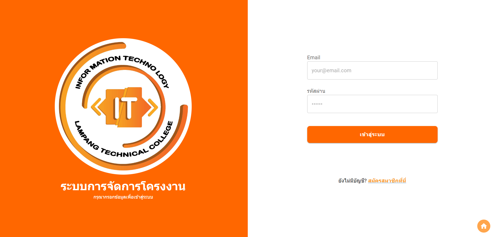
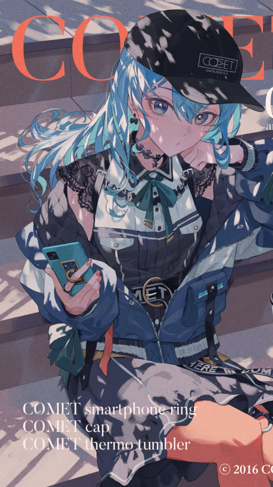

LPTC IT PMS
Use modern technology programming languages to build a web application.
Computer Engineering graduate from RMUTL, Chiang Mai. Currently a DevOps Engineer at AskMe Solutions & Consultants, focused on monitoring, automation, and infrastructure reliability.
Download ResumeLampang 52240, Thailand
Full-time DevOps role following internship conversion.
Built monitoring automation tooling deployed to enterprise customers.
Worked with network devices, servers, and IoT system development.
Computer and printer maintenance and repair.
ESP32-based solar tracking system, improving efficiency by 15–40%.

Smart Drop, an invention used in the National Outstanding Vocational Education Innovation competition.